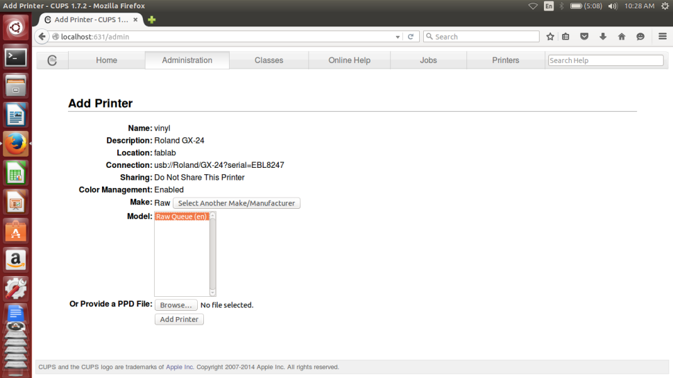
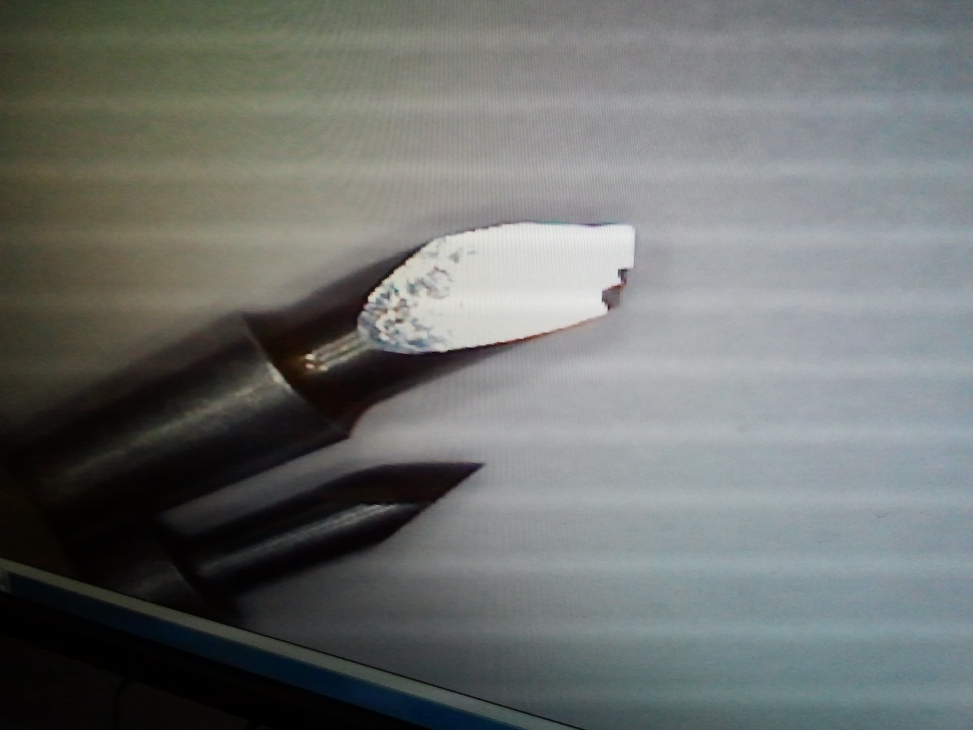
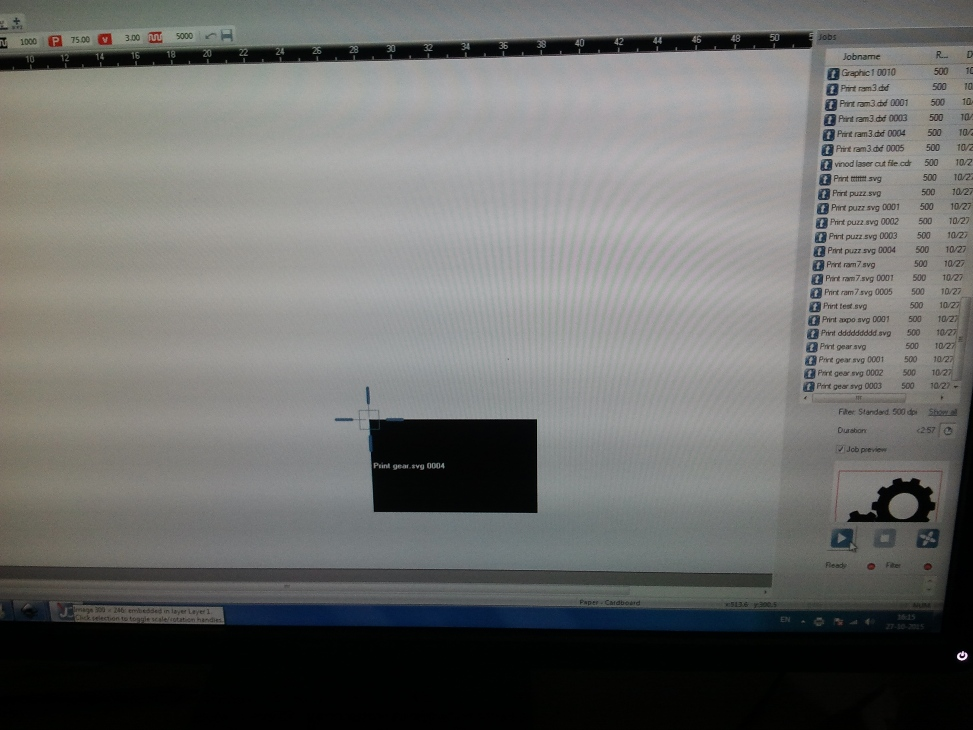

VINYL CUTTER
Vinyl cutters are used to create 2D Stickers and also flexible PCBS in the FABLAB.The stickers to cut should only have two colours ( Black & White) , this is to make sure that there is a clear contrast between the two colours in the boundary. ( ie the sufraces to be cut ) The recommended resolution of the pictures is 500PPi , ie 200Pi/CM. Here we only use pictures in the PNG format.
Setting Up The Vinyl Cutter

Now its time to switch over to the software, follow the procedure to set up the cutter for the first time,


Now finally all is set well with the Test Cut being sucessful, now to open the Vinly Cutter for the desired job,
Go to Terminal --> fab
In the menu that pops up, follow the instuctions as described..

To transfer and stick the sticker to the desired surface, a clear tape is placed on top of the newly printed sticker. The Idea behind this is to take out the desired part of the sticker alone by peeling it carefully.
I had a tough time trying to trasnfer the cut sticker to the desired surface, the tape we used was soo much sticky and did trouble a lot. I finally got the sticker transferd but sicce it had three parts, they came seperately and I had to manually arrange them in place, the following picture tells the story..
The file used for the process can be downloaded from here
Toggle Menu
LASER CUTTER
Laser cutter is one of the most sophisticated as well as costly machine we have in fablab. Unlike most other machines, Laser cutter can not be left unattended. It needs continious monitoring during the time of work. It deals with extreme amounts of heat and hence a constant vigil is necessary to avoid any sorts of hazard that can be caused due to fire.
The first thing to do before using the laser cutter is to turn on its exhaust system shown below and make sure that the blower is working fine.
You can see a red spot light indicating the current head position. This is not the actual high power laser beam used to cut and engrave, but it is used a guiding reference to position the head.
Next step is to place the material in the bay and here we should make sure that it is kept as flat as possible. You can use tapes to fix them firmly to avoid uneven surface. If the material is not kept flat, the exposure rate will also vary according to the depth, hence it is one of the most important criterian to take care of while using the laser cutter.
The next step is to adjust the focus of the beam with the tool provided. It should be mounted on the side of the head, on the groove provided and the material should be manually lifted until the focous tool just makes contact with the material.
The point at which the focus tool falls is the exact location we should leave the head to perfom the cutting and engraving. The following picture shows the focused head.
The Trotec laser cutter has a Jobcontrol Software to set the various parameters of the machine. The kind of material used, dimensions, and lot more can be configured through the user interface. The following shows the screenhot for reference.
The jobcontrol software accepts vector files and it can be generated with any software the user is interested in. The borders to be cut and engraved are differentiated using different colours.The exposure power rate and frequency can be adjusted using the software, which in turn deicdes the required cut or engraving depths.

I learned the process by downloading a vetor file and tweaking with the software settings. The following picture shows the engraving process in progress.
Cutting the edges in progress after finishing engraving.
Picture shows the finished job inside the bay.
The finished cut part after extractig from the cutter.
The file used for the process can be downloaded from here
Toggle Menu
ANTIMONY
Antimony is a computer-aided design (CAD) tool from a parallel universe in which CAD software evolved from Lisp machines rather than drafting tables. Installing antimony has been a tedious process. To install antimony, we have to install all the dependencies.I had a tough time searching for the correct way to do it, bening a novice to linux it took a while for me to get it done after several attempts.
Sucessfully Installed Antimony software.
Experimenting with shapes in Antimony.
I decided to make a general purpose stand using array of polygons. The 3D printed version is documented in the next 3D Printing section.
The 3D Cad model designed is exported as .STL file, which the 3D Printer Control software, CURA accepts.
3D PRINTING
3D printing or additive manufacturing is a process of making three dimensional solid objects from a digital file. The creation of a 3D printed object is achieved using additive processes. In an additive process an object is created by laying down successive layers of material until the entire object is created. Each of these layers can be seen as a thinly sliced horizontal cross-section of the eventual object.
It all starts with making a virtual design of the object you want to create. This virtual design is made in a CAD (Computer Aided Design) file using a 3D modeling program (for the creation of a totally new object) or with the use of a 3D scanner (to copy an existing object). A 3D scanner makes a 3D digital copy of an object.
The following are some of the important things to be understood before starting 3D printing..
The 3D Printer we have is manufactured by ULTIMAKER. The control software for this is CURA.
The following picture shows the 3D design file created using Antimony loaded in CURA. This software provides all the options to change such as the quality of print, resizing, previewing and controling the material etc.
CURA accepts the .STL file of the 3D models to be printed and generates the G-Code required for the control of 3D Printer. This can be loaded in the Memory card provided with ultimaker to start the printing Proccess. The above picture shows the .STL file loaded with different parameters. I had the problem of uneven edges in the loaded files and the picture shows the same with the one fixed also after tweaking the settings and fixing it.
The above picture shows the warming up process of the printer when it is turned on.
The first thing to do before printing is leveling the plane , setting the proper levels corresponding to the head position.
The position in the edges are adjusted with the help of spring loaded screws found in the corners of the base plate
Finally the Z position of plane with the head is positioned in the middle by trying to leave just enough space for a sheet of paper to move comfortably between the head and the bottom plane. Once we position the head and plane to this level, it is ready for printing accurately.
The printer base leveled properly and is warming up for printing.
The printer just starting from the lowest layer.
Printing in progress..
Printing in progress..
Completly finished 3D Printed model of the stand designed in Antimony
The file used for the process can be downloaded from here
Toggle Menu
MOLDING CASTING
Molding or moulding is the process of manufacturing by shaping liquid or pliable raw material using a rigid frame called a mold or matrix. This itself may have been made using a pattern or model of the final object.A mold or mould is a hollowed-out block that is filled with a liquid or pliable material like plastic, glass, metal, or ceramic raw materials. The liquid hardens or sets inside the mold, adopting its shape. A mold is the counterpart to a cast. The very common bi-valve molding process uses two molds, one for each half of the object. Piece-molding uses a number of different molds, each creating a section of a complicated object. This is generally only used for larger and more valuable objects.
Casting is a manufacturing process in which a liquid material is usually poured into a mold, which contains a hollow cavity of the desired shape, and then allowed to solidify. The solidified part is also known as a casting, which is ejected or broken out of the mold to complete the process. Casting materials are usually metals or various cold setting materials that cure after mixing two or more components together; examples are epoxy, concrete, plaster and clay. Casting is most often used for making complex shapes that would be otherwise difficult or uneconomical to make by other methods.
Note : Please find my work on molding casting in the project documentation section.
PRESS FIT JOINTS
Franscisco explained us the concept of press fix joints which is useful while making mechanical structures.
The idea is to measure the thickness of the material to be joined and cutting grooves with +/- tolerences and see which set of them fits perfectly for the process used. It will differ depending on the machine used and the material chosen.
Toggle Menu